Контекст задачи
MARSHALL Autoparts — производитель и дистрибьютор автозапчастей с 20+ лет на рынке. Также им принадлежит сервис «Корона Авто», где компания реализует автозапчасти других производителей.
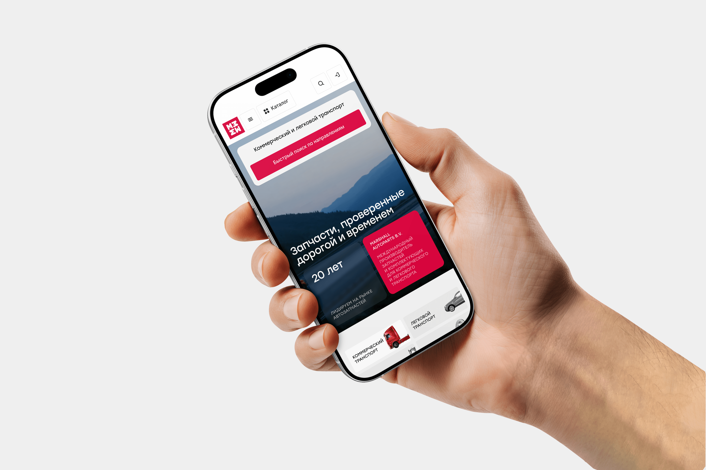
Проблемы
- Пользователи не понимают, с чего начать взаимодействие с продуктом, из-за отсутствия явного основного сценария и конкурирующих действий на первом экране;
- Менеджерам MARSHALL сложно работать с несколькими интернет-площадками одновременно;
- Пользовательский путь к целевому действию содержит лишние шаги, что увеличивает время выполнения сценария и повышает вероятность оттока;
- Интерфейс перегружен информацией, из-за чего пользователю сложно быстро считать ключевую ценность продукта и принять решение о дальнейшем действии;
- Ожидания пользователя от продукта не совпадают с фактическим опытом, что снижает доверие и увеличивает вероятность отказа.
Ограничения
Проект разрабатывался в условиях сложной продуктовой и бизнес-среды:
- Несколько разрозненных продуктов с разной логикой и сценариями;
- Необходимость сохранить привычные процессы для постоянных клиентов;
- Консервативная аудитория с устоявшимися паттернами поведения;
- Большое количество бизнес-требований от разных отделов.
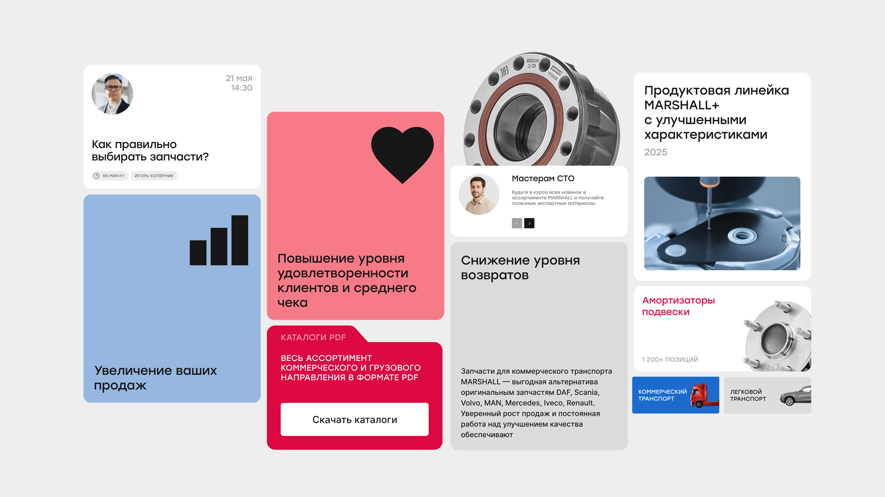
Цели
Собрать разрозненные цифровые продукты в единую платформу и выстроить понятный сценарий покупки. Сократить количество шагов до оформления заказа, упростить навигацию по ключевым разделам и сделать интерфейс одинаково понятным как для конечных покупателей, так и для B2B-клиентов.
Моя роль
Я подключился к проекту на раннем этапе и вместе с арт-директором довел его до финала. Моей зоной ответственности были исследование существующего опыта, формирование UX-гипотез, проектирование пользовательских сценариев, создание кликабельного прототипа, дизайн всего сервиса и участие в разработке общей дизайн-системы продукта.
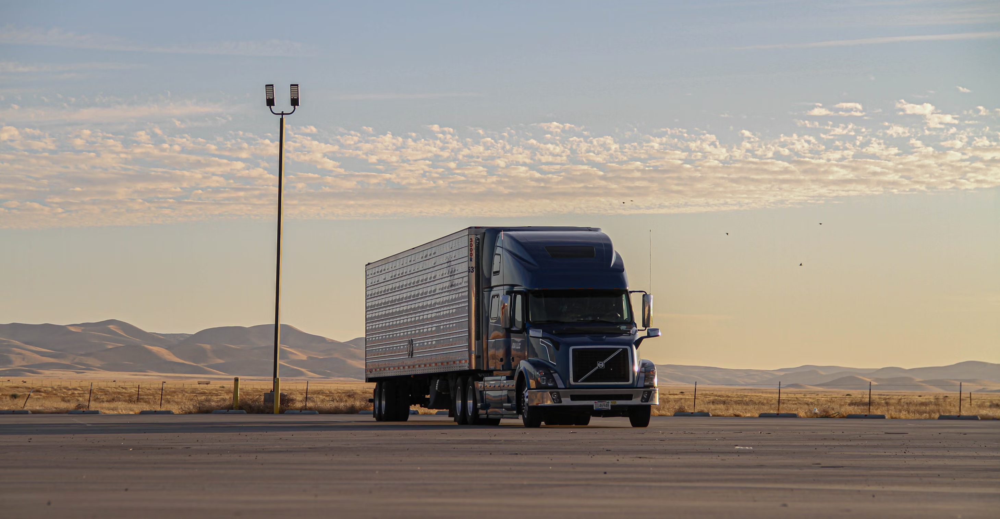
Гипотезы
Я проанализировал существующие продукты MARSHALL, а также пользователей и готовые решения на рынке, что помогло мне получить инсайты, на основе которых я принял несколько решений:
Гипотеза 1
Если привести карточку товара к привычному e-commerce паттерну (убрать сходство с корзиной),то пользователи быстрее поймут интерфейс и реже будут покидать страницу, что снизит bounce rate и увеличит конверсию в добавление в корзину.
Гипотеза 2
Если упростить визуальную иерархию и сделать ключевые действия (цена, CTA, характеристики) более очевидными, то пользователь будет быстрее находить нужные элементы, что сократит time-to-action (с ~20 сек) и повысит конверсию.
Гипотеза 3
Если добавить настройку доставки прямо в карточке товара, то пользователям не придется переходить на следующий шаг, что сократит время оформления заказа и увеличит конверсию в покупку.
Гипотеза 4
Если адаптировать карточку под поведение опытных пользователей (которые «на автомате» совершают покупки), то они смогут быстрее проходить сценарий, что увеличит долю быстрых покупок и общую выручку.
Гипотеза 5
Если внедрить дизайн-систему, то интерфейс станет предсказуемым и консистентным, что снизит когнитивную нагрузку, повысит CR и снизит количество ошибок.
Ключевые решения
Новая UX-архитектура и логика
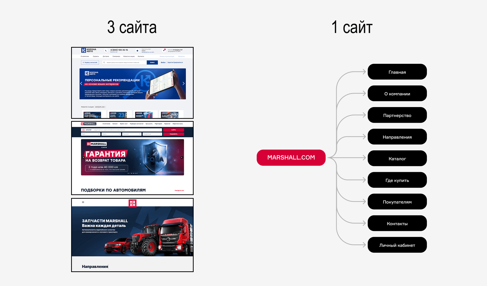
Я разработал новый mind map продукта, который позволил объединить корпоративный сайт, магазин и личный кабинет в единую систему. Теперь пользователи могут узнать всю нужную информацию на одном сайте, вместо того, чтобы метаться по нескольким сервисам. А менеджерам и продактам MARSHALL больше не придется обрабатывать заявки с разных сайтов.
Оптимизация продукта: 3 сайта → 1 сервис
Новая карточка товара
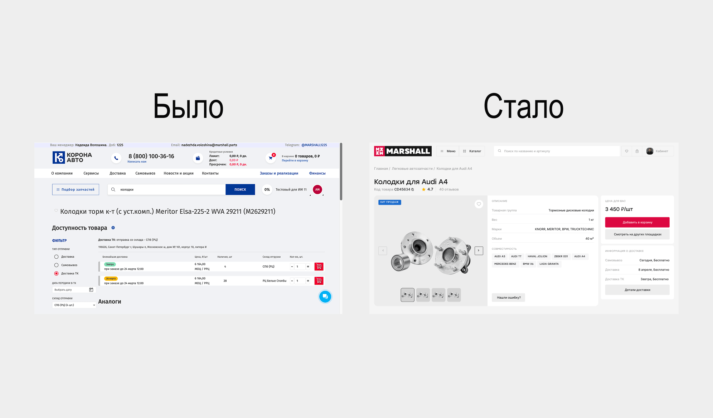
Пользователю требовалось до 15–20 секунд, чтобы понять интерфейс и дойти до действия. Чтобы сократить его, я: структурировал карточку (изображение → характеристики → цена → действие); убрал лишние элементы; добавил блок доставки.
Добавление в корзину: 15 секунд → 8 секунд
Ускорение покупки
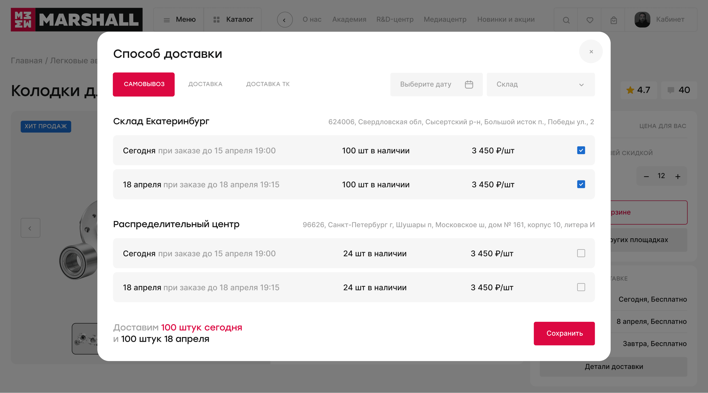
Сократил путь от карточки до оформления заказа:
- Сделал выбор доставки прямо в карточке;
- Упростил оформление до 3 шагов;
- Добавил прозрачную информацию о наличии.
Флоу до покупки: 5 действий → 3 действия
Дизайн-система и UI-кит
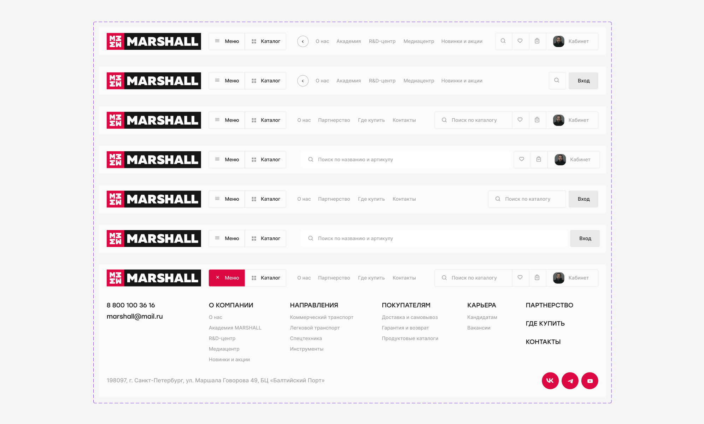
Разработал масштабируемую дизайн-систему:
- 220+ компонентов;
- Единые состояния и паттерны;
- Ускорение разработки новых разделов.
С нуля создал масштабируемую дизайн-систему и UI-кит
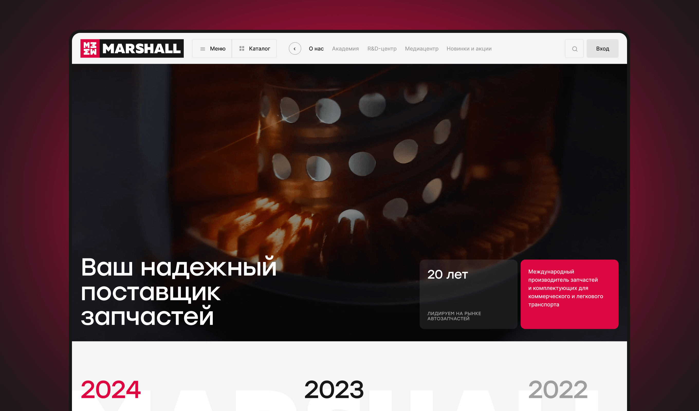
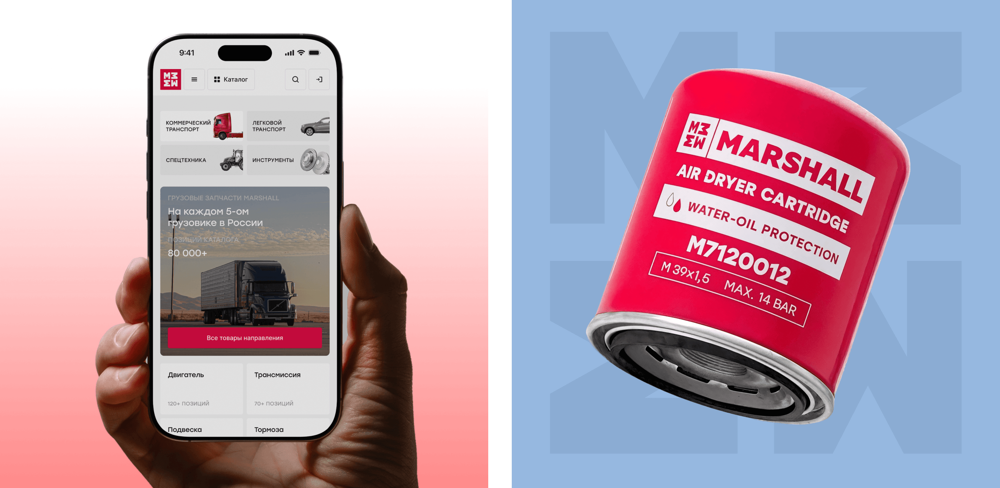
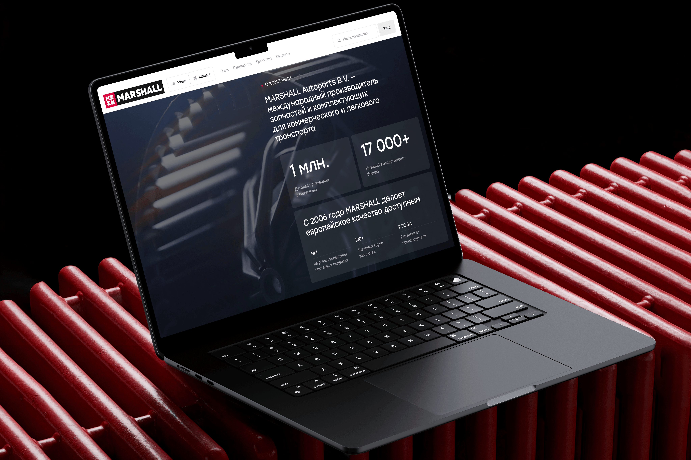
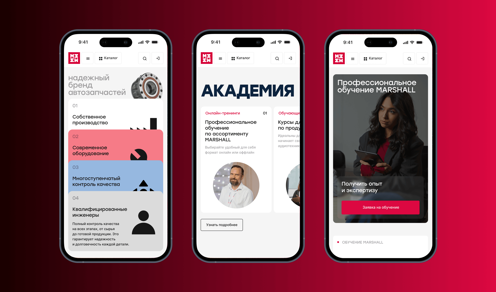

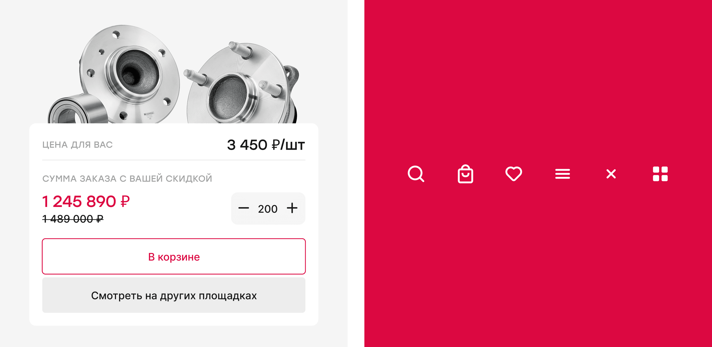
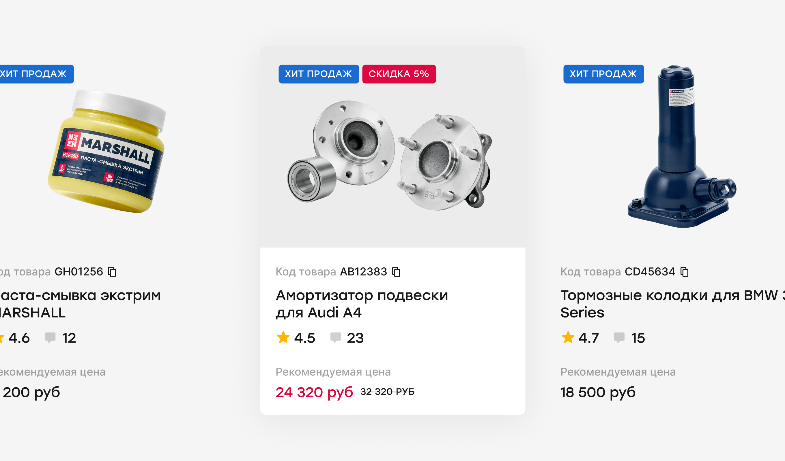
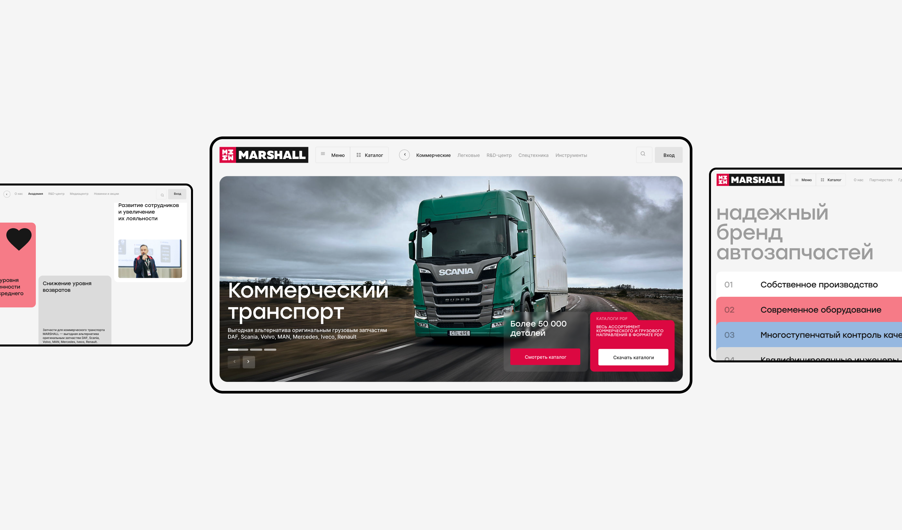
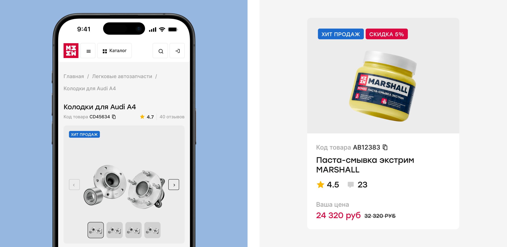
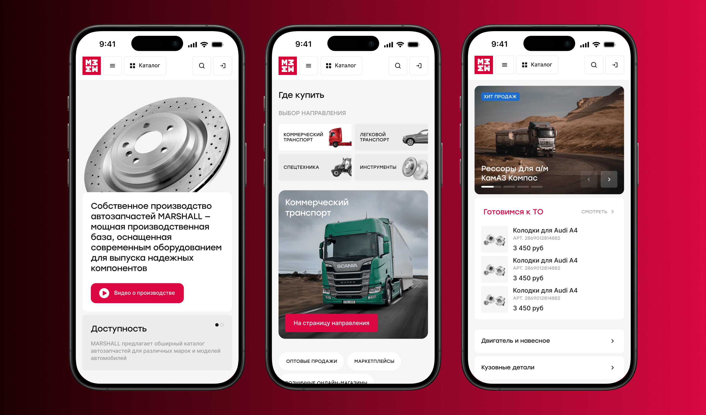
Результат
Объединил 3 сайта в 1 сервис, тем самым:
- Оптимизировал процессы внутри компании, снял часть нагрузки с менеджеров и продактов;
- Сформировал понятный основной сценарий взаимодействия;
- Выстроил понятную логику продукта.
Добавление в корзину: 15 секунд → 8 секунд;
Шаги до покупки: 5 шагов → 3 шага;
Снижение брошенных корзин на 20%;
Уменьшение нагрузки на поддержку на 50%.
Рефлексия
Ключевой вызов — защита решений перед стейкхолдерами и адаптация под консервативную аудиторию. Проект показал, что даже сильные UX-решения требуют учета контекста и поведения пользователей, иначе они не будут приняты.